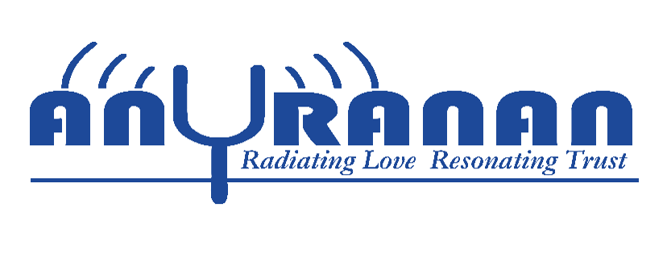

Welcome to Anuranan
Anuranan is more than just an initiative—it’s a heartfelt movement rooted in compassion, community, and change. Born from the belief that every individual deserves dignity, opportunity, and a voice, Anuranan works tirelessly to uplift children and women from underserved backgrounds. Whether it's supporting thalassemia-affected children, organizing blood donation drives, helping orphaned kids or those with incarcerated mothers, or reaching out to rural communities in need—Anuranan stands as a beacon of hope. Through education, empowerment, and collective action, it inspires people to use their privilege to build a more inclusive and humane society.